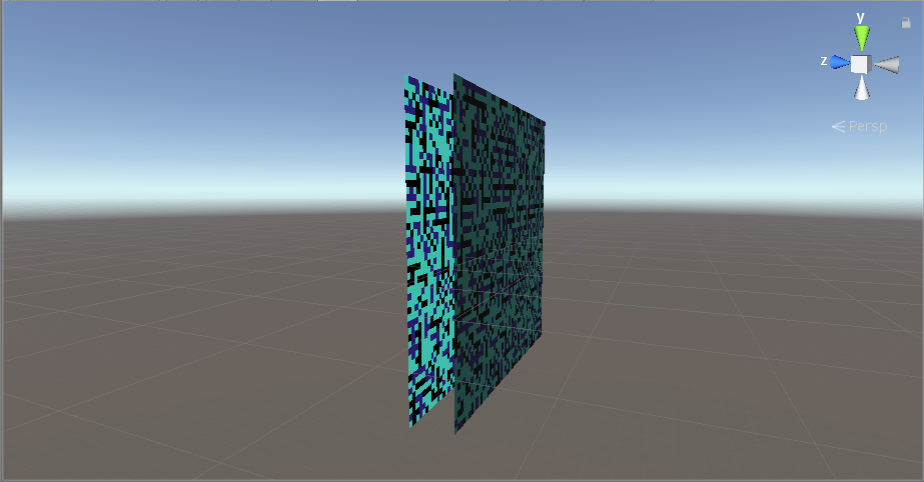
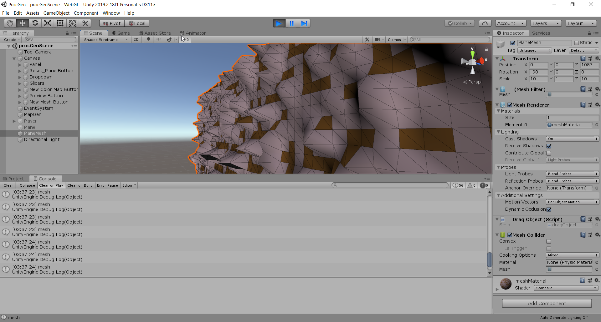
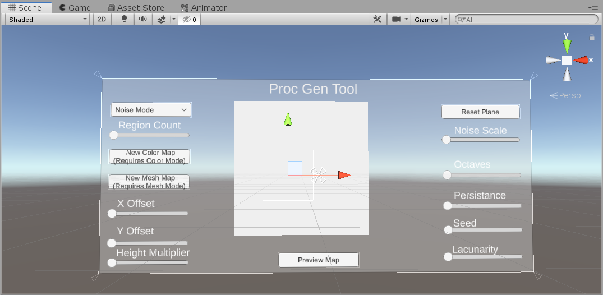

Meshes and Stakeholder (10/21/2020)

For this week, I added meshes to the map and made things begin to look 3D. I also was able to get in touch with 2 more stakeholders for my project.
Access most recent webbuild here: Click Link
Stakeholders (2 hours)
I spent time followup with each of my stakeholders to ask about their research and as well as ideas with regards to my project:
Dr. Mike Cook
Mike Cook is a research fellow at Queen Mary University of London. Here were some questions I asked him:
- I am fascinated by ANGELINA-5's ability to produce 3D games automatically. Is there a specific genre (example: role-playing, action-adventure) that it works best with? Or is it intended to develop games of any genre imaginable?
- What sorts of algorithms or techniques are used in the ANGELINA framework to guarantee that the games it generates are playable from beginning to end?
- Each version of ANGELINA is tailor-made for a specific genre; with an exception of the latest iteration ANGELINA 5 which he aims to make more general. Automated Game Design works best with genres where the design is contained within a few small decisions. Hence, it does not work well with complex genres like JRPGs, which require many small ideas to work well (spells, weapon mechanics, gameplay systems). A puzzle game, for instance, is much easier to automate since it only requires a few simple rules, and allows for a multitude of ways those rules can be exploited.
- Each version of ANGELINA tended to use algorithms/techniques exclusive to it (custom made). ANGELINA-3, for instance, required a handwritten algorithm to verify a player could reach the end of a platformer level. However, AI players tend to be used to see if the games generated can be completed. In particular, MCTS agents are quite useful.
Amit Patel (Red Blob Games)
Amit is a software developer living in the Silicon Vally area and is passionate about computer game development. His blog at https://www.redblobgames.com/ discusses procedural generation and AI algorithms (pathfinding+traversal); each article provided with numerous visual examples. Here are some questions I asked him:
- How did you get started with building procedural generation tools? Which one in your career do you feel most proud of?
- Where do you think procedural generation will be going in the future? Have there been any recent developments or applications of this field that you are excited about?
- "I started with procedural generation tools because I was working on a simulation project where the world evolved, shaped by the player actions. I decided that the same simulation process that was used while the game was running could also be used to generate the initial world. I now think that was a mistake, but that's another topic ;-). The tool I'm most proud of is mapgen4. I designed algorithms that ran very fast so that you could draw on the map and the entire world generator (including evaporation, rainfall, wind, and river flow) could run in 1/30th of a second, so you could see the results in real-time. This took ~5 months of research and experimentation, ~3 months of implementation, and ~3 months of code optimization. I had designed it for a specific game, but that game was canceled, so I released the tool as open source."
- "I think there is a lot of excitement around procedural generation but I do not expect that it will be used much more than it is now. I think people get excited about specific solutions and then overuse them. Instead, focus on the problems and then evaluate possible solutions. For example, if I came to you and said "hash tables are exciting! let's use them in our game!" it would seem weird. Instead, you'd want to develop a game by focusing on the problems like "the player needs to choose skills from a skill tree", and then you evaluate the possible solutions: array or hash table or tree or graph. Then you pick the best solution to that problem. I think we should consider procedural generation as one of many possible approaches to a problem, not necessarily the best one. If there's a procedural generation topic I'd like to see explored more, it's constraint solvers. WaveFunctionCollapse is one specific constraint solver that has gotten some attention but there are so many more that should be looked at."
Tool Development (4 hours)
For the remaining time, I started working on mesh generation foor the map. Given the color map, we can draw out a mesh which replacates its appearances:  Meshes are a data structure that contains triangles formed together. In unity, they have their own material and Renderer. In the next screenshot, you can see the individual triangles that make up the map when it is drawn as a mesh:  I had to extend my UI to support select mesh generation as an option. No matter what random colors we have, the corresponding mesh will be generated:
I ran into a few issues while adding mesh support. For one, I assumed that the player would spawn onto the color map (last week). We also have to deal with two maps at once (a color map, and a mesh map). To handle this correctly, I modified my code so that only one map would be active at once. I also had to reposition the mesh so that its settings and size are identical to the color plane. After handling the mesh generation, I worked on getting the mesh to pop out in 3D. To do this, I take the y value of each mesh verticy and multiply it by a multiplier. This option can now be adjusted in the editor: For next time, I will look into how I can enhance the tool using Amit and Dr. Cook's feedback. I also want to work on getting the UI to be more responsive. Currently, I have manually placed the modified plane within the view of the camera and UI. I would like to look into ways that I can make the UI look cleaner and less prone to manual adjustment. 